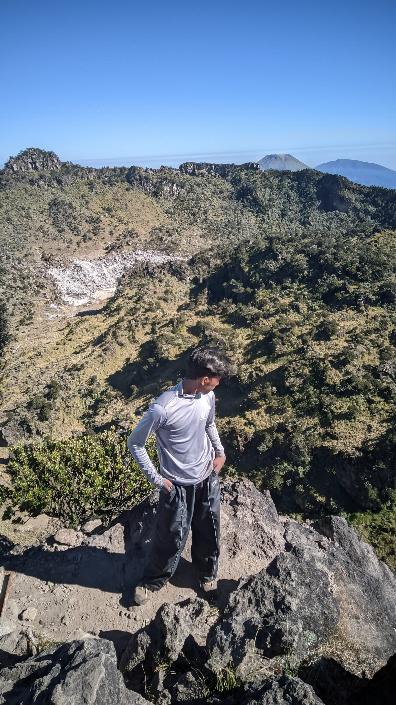
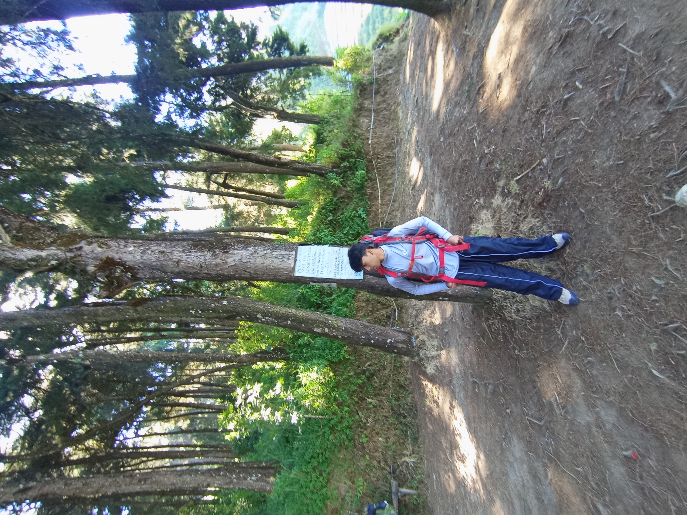
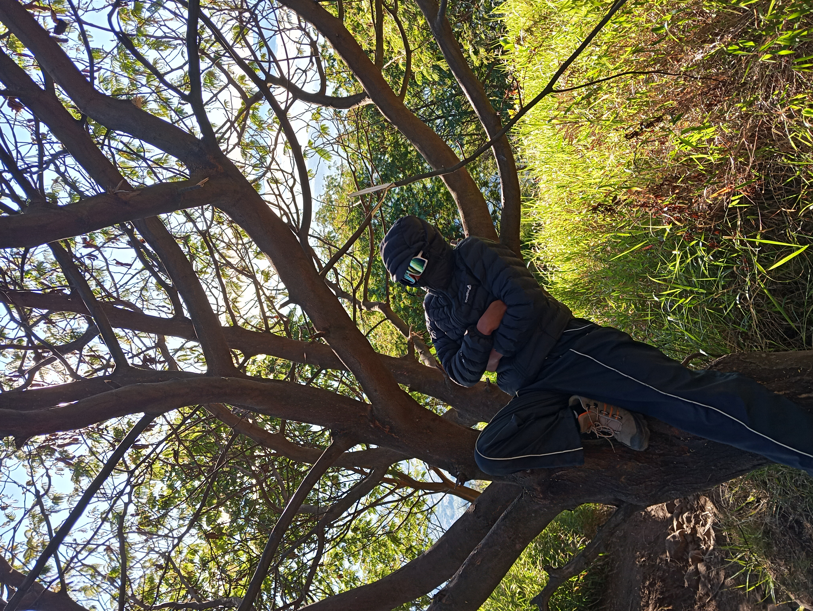

Saya
Muhammad Samir Assobir
Seorang pemuda yang mendedikasikan hidup untuk menuntut ilmu pengetahuan, memperdalam pemahaman agama, serta bersemangat mengembangkan potensi diri untuk kebaikan dunia dan akhirat.
Tentang Saya
Latar Belakang & Identitas
Nama saya Muhammad Samir Assobir. Lahir di kota yang asri dan sejuk, Temanggung, pada tanggal 1 November 2009.
Sebagai generasi muda yang tumbuh di era pesatnya informasi dan teknologi, saya berprinsip untuk selalu menyeimbangkan antara pemahaman ilmu agama Islam sebagai fondasi moral dan akhlak, serta ilmu pengetahuan umum & teknologi sebagai sarana menebar kemanfaatan.
"Asshobir" berasal dari kata yang bermakna kesabaran. Menjadi pengingat bagi saya untuk selalu sabar dalam menuntut ilmu, sabar dalam ketaatan, dan konsisten mencapai cita-cita.
Hobi & Minat Utama
Menuntut Ilmu adalah bahan bakar utama bagi perjalanan hidup saya.
Menuntut Ilmu
Hobi saya bukan sekadar hiburan meluangkan waktu, melainkan kegiatan Menuntut Ilmu secara berkelanjutan. Saya senang membaca, mengkaji hal-hal baru, mempelajari konsep-konsep keilmuan, serta mengasah keterampilan hidup.
"Barangsiapa menempuh jalan untuk menuntut ilmu, maka Allah akan mudahkan baginya jalan menuju surga."
Ilmu Agama & Syariat
Memperdalam Al-Qur'an, Hadits, serta pemahaman nilai-nilai keislaman sebagai pedoman utama hidup.
Teknologi & Digital
Antusias mengikuti perkembangan teknologi modern, pemrograman dasar, dan dunia digital.
Pengembangan Diri
Meningkatkan pemikiran kritis, kemampuan literasi, serta disiplin pribadi secara berkesinambungan.
Cita-Cita Mulia
Masuk Surga Tanpa Hisab
Cita-cita tertinggi dan puncak dari seluruh muara perjuangan hidup saya adalah meraih ampunan dan ridho Allah SWT, sehingga dikumpulkan kelak bersama orang-orang sholeh di dalam Surga-Nya Tanpa Hisab.
Galeri Saya
Kumpulan foto dan momen yang ingin saya abadikan.

Momen 01

Momen 02
Foto Profil